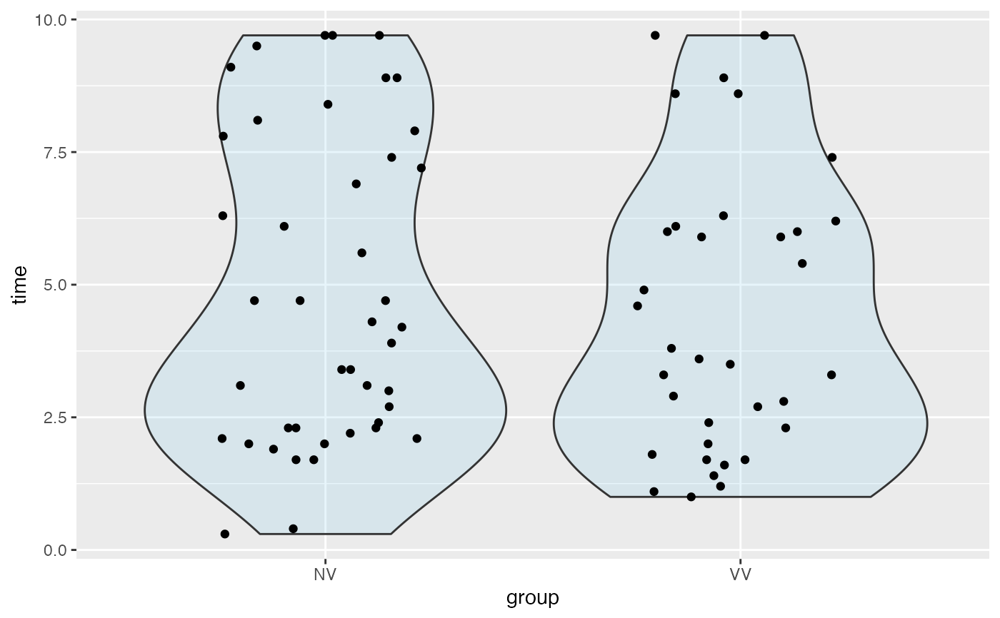

Results of an experiment on the effect of prior information on the time to fuse random dot steregrams. One group (NV) was given either no information or just verbal information about the shape of the embedded object. A second group (group VV) received both verbal information and visual information (e.g., a drawing of the object).
Format
A data frame with 78 observations on the following 2 variables.
- time
time until subject was able to fuse a random dot stereogram
- group
treatment group:
NV(no visual instructions)VV(visual instructions)
Source
These data are available at DASL, the data and story library (https://dasl.datadescription.com/).
References
Frisby, J. P. and Clatworthy, J. L., "Learning to see complex random-dot stereograms," Perception, 4, (1975), pp. 173-178.
Cleveland, W. S. Visualizing Data. 1993.
Examples
data(Stereogram)
#> Warning: data set ‘Stereogram’ not found
favstats(time ~ group, data = Stereogram)
#> group min Q1 median Q3 max mean sd n missing
#> 1 NV 0.3 2.30 4.2 7.60 9.7 4.839535 2.918344 43 0
#> 2 VV 1.0 2.15 3.6 6.05 9.7 4.408571 2.647571 35 0
gf_violin(time ~ group, data = Stereogram, alpha = 0.2, fill = "skyblue") %>%
gf_jitter(time ~ group, data = Stereogram, height = 0, width = 0.25)
